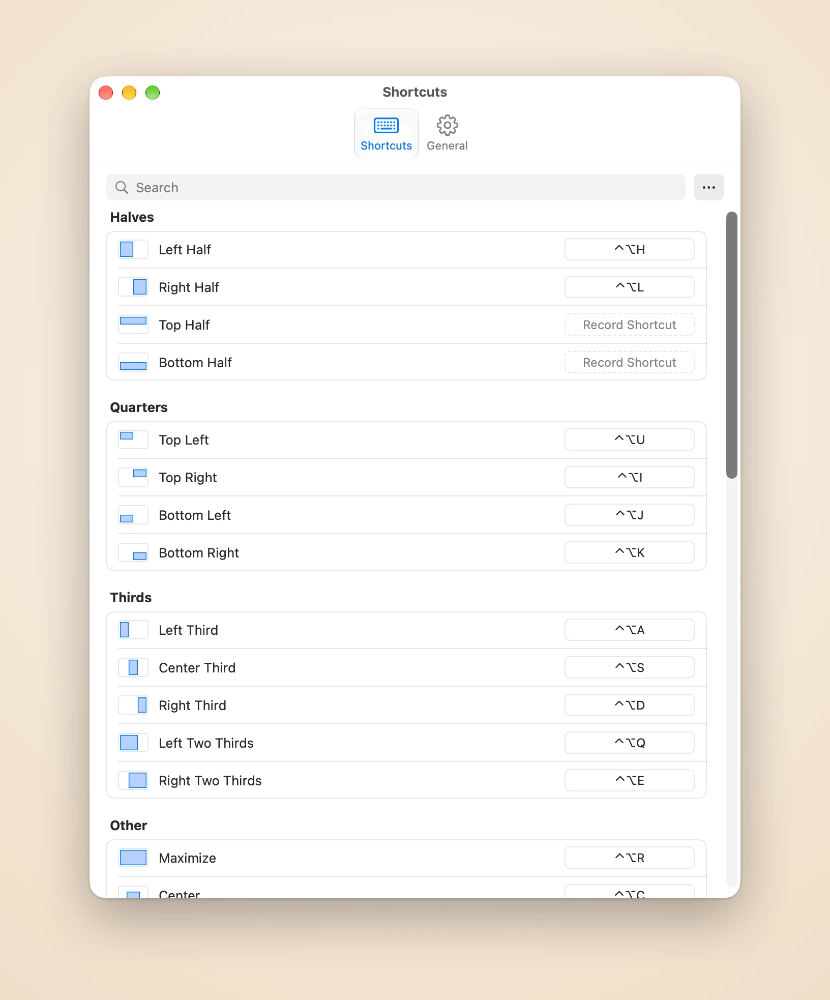

Tile the windows you’re actually using
Piccolo remembers which windows you used last. One shortcut lays out the latest two, three or six side by side or in a grid on the current display, so you never pick them one by one.
Piccolo tiles the windows you just used and keeps your desktop tidy, all from the keyboard.
Free for 14 days, no credit card needed
Purchase for $4.99
Piccolo remembers which windows you used last. One shortcut lays out the latest two, three or six side by side or in a grid on the current display, so you never pick them one by one.
Once Piccolo has arranged a group, a shortcut moves the divider next to the focused window and its neighbours follow, with no gaps and no overlaps. Swap Window trades two windows’ places and the layout stays.
Hold a shortcut and a highlight shows the destination. Let go to move the window there, or press Esc and nothing changes.
Press again for 2/3, then 1/3
⌃⌥H ⌃⌥L
One key for each corner
⌃⌥U ⌃⌥I ⌃⌥J ⌃⌥K
Three columns for wide screens
⌃⌥A ⌃⌥S ⌃⌥D
Room for the main window
⌃⌥Q ⌃⌥E
Fills the whole screen
⌃⌥R
Same size, right in the middle
⌃⌥C
Same relative size and place
⌃⌥[ ⌃⌥] ⌃⌥⌘ + arrows
Draw your own on the screen
⌃⌥W
Back to where it was before
⌃⌥⌫
Click an action in Settings and press the keys you want. Grids and custom areas get their own shortcuts too, and power users can edit the config file by hand.

Every action in one list. Click a row, press the keys, and it’s saved. ⌘Z undoes any change.
Windows glide into place and bounce softly when there’s nowhere to go. Pick the speed, or turn it off.
When the windows don’t fill a grid, choose whether the last one stretches down or across: columns first for a wide display, rows first for a portrait one.
Leave a gap between windows and around the edges, so shadows don’t pile up into dark seams.
English, 简体中文, 繁體中文, 日本語, 한국어, Français, Español, Português and Deutsch.
No account, no analytics. Only the license check and the update check go online.
Launch price
US$4.99 one-time purchase · US$9.99 after launch
Orders are processed by Dodo Payments, the merchant of record, which handles payment, tax and invoices.
macOS 14 or later, and the Accessibility permission: Piccolo moves other apps’ windows through the macOS Accessibility API, so without it no window moves.
Piccolo moves and resizes other apps’ windows through the macOS Accessibility API, and without the permission no window moves. It uses it to read and change the position and size of windows. You grant it under System Settings, Privacy & Security, Accessibility.
The compatibility record lists what each action does with them on every macOS release it was measured on, how long a shortcut takes and how much memory Piccolo uses.
Nothing else leaves your Mac: no analytics, no crash reporting. Your windows, shortcuts and config file stay local. See the Privacy Policy.
One license covers 3 Macs.
On the Mac you want to free, open Settings, go to General and choose Deactivate This Mac. Then activate your license on the other Mac.
You can ask for a refund within 30 days of purchase, no questions asked. Email support@damao.io with your order number. See the Refund Policy.